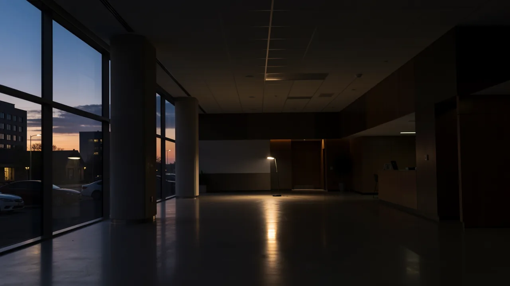

루노의 20% 수수료 인하: 암호화폐 시장의 과열 현상에 대한 경고
해당 암호화폐 거래소는 직원 수를 거의 5분의 1이나 감축하며, 디지털 자산이라고 해서 구조조정이라는 냉혹한 현실로부터 완전히 보호받을 수 없다는 것을 보여주고 있습니다.

20퍼센트. 현재 루노의 모든 곳을 맴돌고 있는 마법 같은 숫자입니다. 만약 당신이 저녁 식사 파티에 참석했는데 누군가가 애피타이저의 20%를 줄이겠다고 발표한다면, 아마 약간 짜증이 날 수는 있지만 변호사를 부를 일은 없을 겁니다. 하지만 주요 암호화폐 거래소가 전 세계 직원 규모의 20%를 감축한다면, 이는 단순한 '타파스 부족' 문제가 아니라 '실제로 경제가 우리에게 영향을 미치고 있다'는 의미가 됩니다.
디지털 커런시 그룹의 지원을 받는 남아프리카 공화국 기반의 주요 암호화폐 기업인 루노는 현재 대규모 인력 감축을 포함한 구조 조정 단계를 진행하고 있습니다. 이는 기술 산업의 일반적인 방식입니다. 마치 불을 발견한 것처럼 적극적으로 인력을 채용한 다음, 벤처 자금 지원이 줄어들기 시작하면 인력 규모를 대폭 줄입니다.

'구조 조정'이라는 완곡한 표현
잠시 실리콘밸리의 언어에 대해 이야기해 봅시다. 기업의 보도 자료에서 '구조 조정'은 마치 거실의 가구를 재배치하여 비치볼 의자를 놓을 공간을 더 확보하는 것과 같이, 부드러운 조직 개편처럼 들립니다. 하지만 실제로는 '우리가 간식과 고급 사무용 의자에 너무 많은 돈을 썼고 이제 재정을 맞춰야 한다'는 의미입니다.
루노에게 이는 단순한 작은 조정이 아니라 중요한 변화입니다. 암호화폐 시장은 최근 몇 년 동안 '달까지 간다'는 낙관적인 분위기에서 벗어나 훨씬 더 현실적인 '거래소가 붕괴하지 않도록 해주세요'라는 시대로 접어들었습니다. 이러한 변화는 많은 기업들이 단순히 사용자 확보를 위해 돈을 쏟아붓는 대신, 비트코인 가격이 특정 수준 아래로 떨어지면 사라질 수 있는 사용자를 확보하는 방식에서 벗어나 더 지속 가능한 비즈니스 모델로 전환하도록 강요했습니다.
이것이 단순한 '암호화폐 문제'가 아닌 이유
암호화폐 산업을 지적하며 '보세요. 제가 말했잖아요. 거품이었어요.'라고 말하고 싶은 충동이 들 수 있습니다. 하지만 루노의 상황은 훨씬 더 광범위하고 지루한 문제, 즉 무한정 돈이 풀리던 시대의 종말을 보여주는 증상입니다. 금리가 거의 0%일 때, 기업들은 시바 이누 토큰에 대한 소셜 미디어 계정을 관리할 직원을 고용할 여유가 있었습니다. 이제 개발자 급여에 지출되는 모든 달러는 이익을 실제로 중요하게 생각하는 사람들에 의해 면밀히 검토됩니다.
루노는 대규모 구조 조정의 일환으로 전 세계 직원 규모를 20% 감축합니다.

이것은 단순히 암호화폐 애호가들에 대한 이야기만이 아닙니다. 우리는 '어떤 대가를 치르더라도 성장'에서 '실제로 이익을 내는 성장'으로 초점이 이동하면서 전 세계 기술 분야의 인력 감축이라는 더 큰 추세를 목격하고 있습니다. 기술 분야에서 일하는 사람들에게 이 상황은 당신의 직업이 위험하다는 의미가 아니라, '성장 지상주의'가 훨씬 더 엄격한 무언가, 즉 효율성으로 대체되고 있다는 의미입니다.
당신에게 의미하는 바
그렇다면, 아침 커피를 마시며 이 글을 읽고 있는 당신에게 이 상황은 무엇을 의미할까요? 투자자라면 이는 산업이 성숙해지려고 노력하고 있다는(적어도 어린아이처럼 행동하는 것을 멈추려고 한다는) 신호입니다. 직원이라면 '구조 조정'은 갑작스러운 폭풍과 같은 기업의 방식이라는 것을 상기시켜줍니다. 폭풍을 막을 수는 없지만, 적어도 우산을 가지고 있는지 확인해야 합니다.
결국 루노는 극심한 변동성이 심한 시기를 헤쳐나가려고 노력하고 있습니다. 이번 20% 규모의 감축이 루노를 더욱 효율적이고 강력하게 만들지, 아니면 경쟁할 만큼 충분히 강력하지 않게 만들지는 두고 봐야 할 것입니다. 하지만 한 가지 확실한 것은 무분별한 확장의 시대는 공식적으로 과거의 유물이 되었다는 것입니다.
우리는 기술 분야의 '대규모 합리화' 시대에 접어들고 있는 것일까요, 아니면 이것이 훨씬 더 긴 침체의 시작일까요?
DeepSage 계정을 무료로 생성하여 기사를 저장하고, 퀴즈 결과를 추적하며, 매일 제공되는 주요 정보를 가장 먼저 받아보세요.